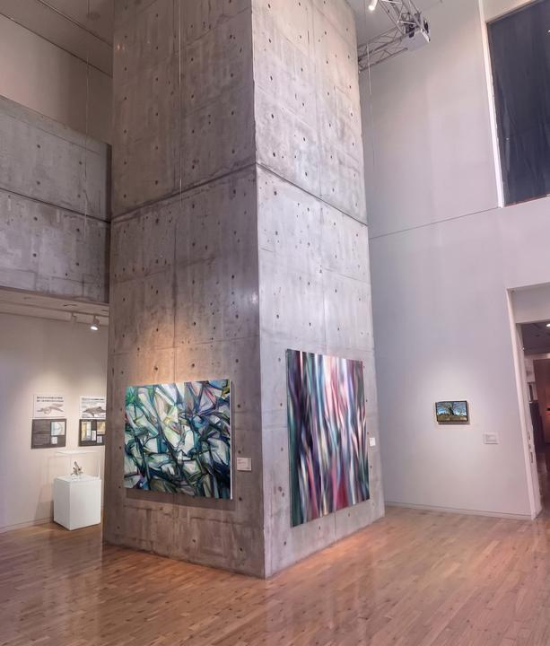

EX — Exhibition Archive2022 — 2026
下へスクロールするだけで、2022年から2026年までの会場を順にめぐれます。気になる写真にふれると、その会場へひとっ飛び。

NOW ON VIEW 開催中 二重の遠景 小海町高原美術館 Hall 3 ／ 2026.09 —すべての展示を、新しい順に。行を押すと、それぞれの記録ページがひらきます。
会場に置かれ、人に見られた作品の記録です。
実施中・提案中のサイトスペシフィックな制作計画。
企画提案をひらく